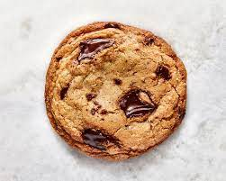

Chocolate Chip Cookies

Decscription
After years and years of attempts at perfecting chocolate chip cookies, this recipe takes the cake! Sprinkling sea salt on top before baking creates the perfect sweet-salty combo to compliment the crunchy edges and soft centres of these cookies.
Ingredients
- 1/2 cup butter
- 3/4 cup brown sugar, packed
- 1/2 cup white sugar
- 2 eggs
- 1/2 tsp vanilla extract
- 2 1/2 cups flour
- 1 tsp baking soda
- 1/2 tsp sea salt
- 1/2 cup chocolate chips
Steps
- Melt 1/2 cup of butter slowly in the microwave or brown on stovetop and set aside until cool
- Combine melted butter with 3/4 cup brown sugar and 1/2 cup white sugar and cream together until white and fluffy
- Add one of the two eggs until combined then add other egg and 1/2 tsp vanilla extract and mix to combine
- Mix together 2 1/2 cups of flour, 1 tsp baking soda and 1/2 tsp sea salt in a separate bowl
- Add flour mixture to wet ingredients slowly to incorporate before adding 1/2 cup of chocolate chips
- Rest dough in fridge while preheating the oven to 350 degrees
- Scoop 1/4 cup of dough onto cookie sheet, sprinkle with sea salt and bake for 12 to 15 minutes or until golden at the edges
- Enjoy!
Back to home